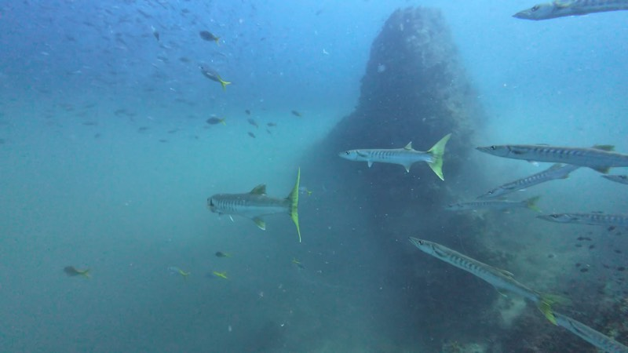
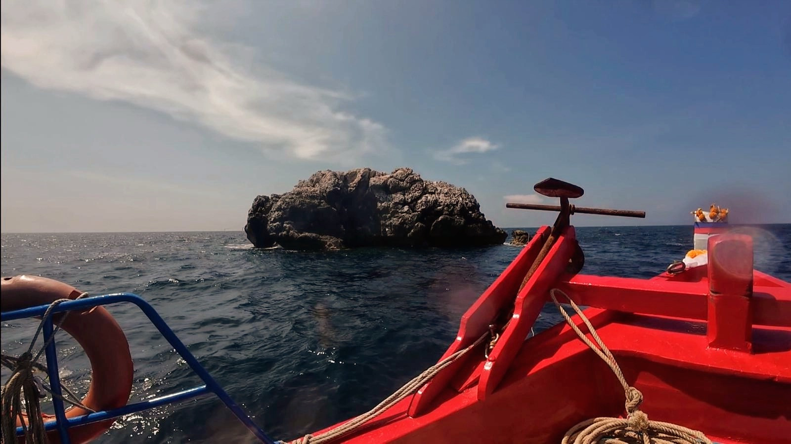
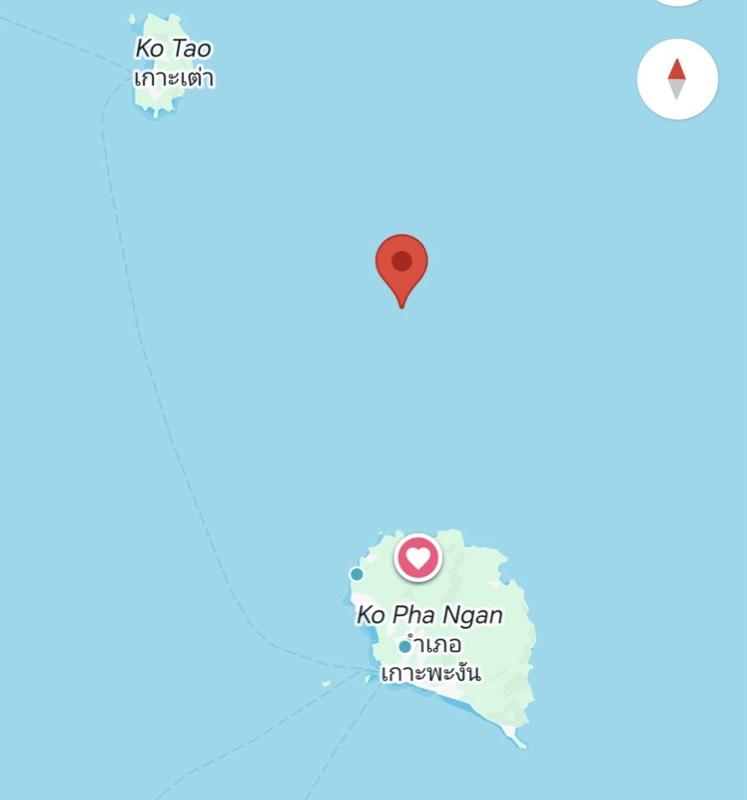
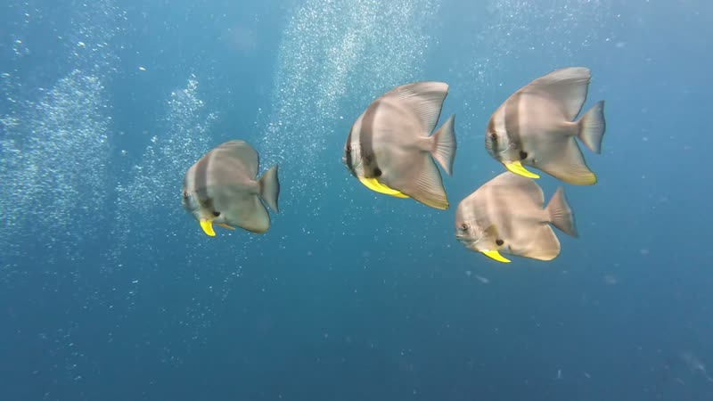

Todo el año

Barracudas (Sphyraena spp.)
Enormes bancos en espiral, a menudo justo al lado de la roca. La imagen que casi todos los buceadores se llevan de Sail Rock.

Inicio / Puntos de buceo / Guía de Sail Rock
Un pináculo de granito solo en mar abierto entre Koh Phangan y Koh Tao, que sube desde 40 metros hasta por encima de la superficie. Bancos de barracudas y peces murciélago, una chimenea que atraviesa la roca y, algunos días, un tiburón ballena. Esto es lo que te espera, cuándo ir y cómo bucearlo.

Sail Rock · mar abierto, a una hora
El sitio · Hin Bai
Sail Rock —Hin Bai en tailandés— está sola en mar abierto, lejos de cualquier arrecife. Sin otro sitio donde refugiarse, los peces de mar abierto se concentran a su alrededor: por eso es el mejor punto de buceo del golfo y el que casi todos los buceadores de Koh Phangan y Koh Tao quieren ver.
La roca cae por todos sus lados, así que hay una profundidad para cada nivel: los buceadores nuevos se quedan en las paredes altas, los titulados rodean el pináculo más abajo y los que tienen Deep pueden llegar al fondo de arena a 40 metros.

Las paredes de Sail Rock
La chimenea
Lo más característico de Sail Rock es un túnel vertical que atraviesa el pináculo por el centro. La entrada de arriba está a 6 metros, la de abajo a 18, y a mitad de camino se abre una ventana en la pared entre los 10 y los 14 metros.
Se puede hacer de arriba abajo, de abajo arriba, o entrar y salir por la ventana. Preferimos hacerla de arriba abajo: bajando se evita cualquier ascenso descontrolado. No hace falta ningún curso especial: a diferencia de una cueva, está abierta a la superficie, así que en una emergencia siempre puedes subir directamente. Tu guía decide en el momento, según tu nivel.
Qué vas a ver
Sail Rock es sinónimo de peces en cantidad. Los bancos se quedan en el azul junto a las paredes, y los visitantes más grandes llegan desde mar abierto para alimentarse de ellos.

Enormes bancos en espiral, a menudo justo al lado de la roca. La imagen que casi todos los buceadores se llevan de Sail Rock.

Peces murciélago curiosos que se acercan a mirarte, y jureles cazando en los bordes de los bancos.

El pez más grande del mar visita Sail Rock para alimentarse de plancton. La temporada clásica es de abril a junio, pero también los hemos visto en febrero y septiembre.
Cuándo ir
Sail Rock se puede bucear todo el año, y el agua se mantiene a 28–30°C. Lo que cambia es la visibilidad y quién viene de visita.
Más plancton y una visibilidad de unos 5–10 m. Ese plancton alimenta a los grandes bancos y atrae a los tiburones ballena.
Los meses clásicos del tiburón ballena, con el agua empezando a aclararse. Nunca garantizado, siempre esperado.
Sail Rock en su momento más claro, a menudo con 20–30 m de visibilidad. Los mejores meses para ver el pináculo entero de un vistazo.
Seguimos abiertos, pero los días en que el mar no es seguro el barco no sale y te devolvemos el dinero.
Cómo verlo
Salimos de Chaloklum a las 9:30 en nuestro propio barco, el Rungworawan, y normalmente llegamos cuando los primeros barcos se están yendo. Dos inmersiones, comida caliente en cubierta y vuelta al muelle hacia las 15:00.
Buceadores titulados
Dos inmersiones guiadas con un máximo de cuatro buceadores por guía. Con la especialidad Deep se puede bajar hasta el fondo a 40 m.
1 día3,200฿
DetallesAprende a bucear
Tus inmersiones de formación en aguas abiertas se hacen aquí, así que te titulas en el mejor punto del golfo.
3 días12,900฿
DetallesSin bucear
La parte alta de la roca está cerca de la superficie, así que quien hace snorkel también ve los bancos, y a veces un tiburón ballena.
1 día1,500฿
DetallesPreguntas
En mar abierto entre Koh Phangan y Koh Tao, en el golfo de Tailandia. Desde nuestro muelle en Chaloklum, en la costa norte de Koh Phangan, está a una hora en barco aproximadamente.
La roca sube desde unos 40 metros hasta por encima de la superficie. La mayoría de las inmersiones van de 5 a 30 metros; el fondo a 40 metros es para buceadores con la especialidad Deep.
Sí. Las partes poco profundas de la roca son adecuadas para bautismos y alumnos de Open Water, y nuestras inmersiones del curso Open Water se hacen aquí. Los días de mar movido podemos elegir para los principiantes Koh Ma, que es más tranquilo.
Se puede bucear todo el año. El agua está más clara de mayo a octubre aproximadamente, a menudo con 20–30 m de visibilidad. De enero a abril hay más plancton y menos visibilidad, pero más vida, y los tiburones ballena son más probables de abril a junio.
Nadie puede prometerlo. La temporada clásica es de abril a junio, y también hemos tenido encuentros increíbles en febrero y septiembre. Cuando aparece uno, es la inmersión de tu vida.
Un túnel vertical que atraviesa el pináculo, desde 6 metros arriba hasta 18 metros abajo, con una ventana en la pared entre los 10 y los 14 metros. Normalmente la hacemos de arriba abajo para evitar ascensos descontrolados. Está abierta a la superficie, así que no hace falta ningún curso especial; tu guía decide en el momento si es adecuada para tu nivel.
A veces. Al estar en mar abierto, la corriente cambia de un día a otro, pero normalmente solo pega en un lado de la roca. Planificamos cada inmersión para evitarla y te lo explicamos en el briefing del barco antes de entrar al agua.
Desde las dos islas salen barcos. Desde Chaloklum se tarda una hora aproximadamente, y con nuestra salida a las 9:30 normalmente llegamos cuando los primeros barcos se van, así que la roca está más tranquila.
Un día de Fun Dive con dos inmersiones cuesta 3,200฿ para buceadores titulados, y la excursión de snorkel 1,500฿. Ambos incluyen equipo, comida caliente, fruta, bebidas y vídeo submarino.
Cuéntanos tu nivel y tus fechas por WhatsApp, y te diremos con sinceridad cómo está el mar y qué día conviene ir.
Mira también nuestros otros puntos de buceo en Koh Phangan.